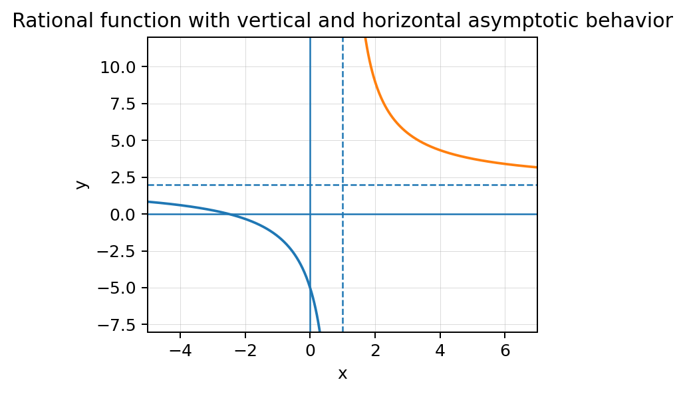

Limits describe unbounded and long-run behavior; continuity lets the Intermediate Value Theorem guarantee what must occur between endpoints.
Section Introduction
Two different kinds of “far away” behavior
An infinite limit describes what happens to outputs as the input approaches a finite number. If the outputs grow without bound, that input can be a vertical asymptote. A limit at infinity instead asks what happens to the function as the input itself grows very large in magnitude.
A horizontal asymptote comes from long-run output behavior. It does not act like a wall; a function can cross a horizontal asymptote and still approach it as \(x\to\infty\) or \(x\to-\infty\).
The Intermediate Value Theorem uses continuity in a different way. If a function is continuous on a closed interval, then every output between the endpoint outputs must occur somewhere in that interval. The theorem guarantees existence, not the exact input.
For asymptotes, read the direction of the limit. For IVT, verify the hypotheses before making the guarantee.
Vocabulary / Key Notation Preview
infinite limit · vertical asymptote · limit at infinity · horizontal asymptote · Intermediate Value Theorem
Sort the vocabulary. Write each vocabulary word in the column that best matches what you know right now. You may move a word later.
| Know for sure | Recognize | Don't know yet |
|---|---|---|
Section Preview
Skim before close reading. Look at the headings, tables, graphs, and examples. Find 1–2 things you notice and 1–2 things you wonder about.
| What I noticed | |
|---|---|
| What I wonder |
Close Reading Directions
READ IN SHORT CHUNKS. Annotate the words and visuals together. Underline evidence, circle or highlight bold vocabulary, label arrows or important features, connect sentences to tables and graphs, and jot short questions or connections in the margins. Use these directions through the What's To Come section and the reading that follows.
What's To Come
PREVIEW / DECOMPOSE. Use the connected parts to see where this section is headed. Annotate the representations and prompts as you work.
Use \(R(x)=\dfrac{2x+5}{x-1}\). The graph is shown below. Also note that \(R\) is continuous on any interval that does not contain \(x=1\).

Part A
Identify the vertical asymptote and describe the corresponding infinite-limit behavior in words.
- Answer: Vertical asymptote x=1; function values grow without bound in magnitude as x approaches 1 from at least one side.
- Reasoning: The denominator approaches 0 while the numerator stays nonzero.
- Teaching move / listen for: Press students to distinguish x=1 from an output value.
Part B
Identify the horizontal asymptote and write the associated limit at infinity.
- Answer: \(y=2\), with \(\lim_{x\to\infty}R(x)=2\) and also \(\lim_{x\to-\infty}R(x)=2\).
- Reasoning: Leading-term ratio 2x/x approaches 2.
- Teaching move / listen for: Ask which variable is approaching infinity in this statement.
Part C
Compute \(R(2)\) and \(R(4)\). Is \(6\) between those endpoint values?
- Answer: R(2)=9 and R(4)=13/3; yes, 6 lies between them.
- Reasoning: The endpoint outputs bracket 6.
- Teaching move / listen for: Have students compare values numerically without losing the exact fraction.
Part D
Does IVT guarantee some \(c\in(2,4)\) with \(R(c)=6\)? Justify using the theorem conditions.
- Answer: Yes.
- Reasoning: R is continuous on [2,4] because its only denominator zero is x=1, outside the interval, and 6 lies between R(2) and R(4).
- Teaching move / listen for: Require both continuity on the closed interval and the between-endpoint condition.
I Can 1I can interpret infinite limits and limits at infinity to identify asymptotic behavior, and apply the Intermediate Value Theorem when its hypotheses are satisfied.
An infinite limit such as \(\lim_{x\to a^+}f(x)=\infty\) says the output grows without bound as the input approaches a finite target from one side. This behavior identifies a vertical asymptote \(x=a\) when the appropriate one-sided behavior occurs.
A limit at infinity, such as \(\lim_{x\to\infty}f(x)=L\), describes long-run output behavior. If the output approaches a finite value \(L\), then \(y=L\) is a horizontal asymptote in that direction.
The Intermediate Value Theorem says that if \(f\) is continuous on \([a,b]\), then every output value between \(f(a)\) and \(f(b)\) is achieved at some input in the interval. It guarantees existence, not uniqueness and not an exact location.
Vertical behavior
\(x\to a^\pm\)
Output may approach \(\pm\infty\).
Horizontal behavior
\(x\to\pm\infty\)
Output may approach finite \(L\).
Vertical asymptote
Equation \(x=a\).
Horizontal asymptote
Equation \(y=L\).
Example 1: Connect limit notation to asymptotes
For \(f(x)=\dfrac{3x+2}{x+1}\), identify the vertical and horizontal asymptotes. Write one appropriate limit statement for each type.
- Answer: Vertical x=-1; horizontal y=3. Example statements: \(\lim_{x\to-1^+}f(x)=-\infty\) and \(\lim_{x\to\infty}f(x)=3\).
- Reasoning: Denominator zero gives the vertical location; leading-coefficient ratio gives long-run level.
- Teaching move / listen for: If students write “vertical asymptote y=-1,” stop and compare x=constant versus y=constant equations.
You Try It 1: Read a fresh rational function
For \(g(x)=\dfrac{4x-1}{x-2}\), identify the vertical asymptote and horizontal asymptote. Then explain which limit direction corresponds to each.
- Answer: Vertical x=2; horizontal y=4.
- Reasoning: Approaching x=2 describes vertical behavior; x→±∞ describes horizontal end behavior.
- Teaching move / listen for: Require words or notation distinguishing the two types of approach.
Stop and Discuss
- What is approaching in an infinite limit near a vertical asymptote?
- What is approaching in a limit at infinity?
- Why are vertical and horizontal asymptote equations written in different forms?
- Answer: Near a vertical asymptote, x approaches a finite a while f(x) becomes unbounded. In a limit at infinity, x becomes unbounded while f(x) may approach finite L. Thus vertical is x=a and horizontal is y=L.
- Reasoning: Direction of approach determines interpretation.
- Teaching move / listen for: Have students label x-input and y-output explicitly.
I Can 2I can use asymptotic behavior to describe a function model.
Asymptotic behavior can summarize a model without describing every input. A horizontal asymptote may represent a long-run level, carrying capacity, baseline, or value approached over time. A vertical asymptote may mark an excluded input or a location where the model becomes unbounded.
The interpretation must respect the model domain. A vertical asymptote at a negative time may be algebraically present but irrelevant if the context only allows \(t\ge0\). Likewise, a horizontal asymptote describes long-run behavior, not a rule that the model can never cross that value.
Good model interpretation includes variables and units when available. State what the function approaches and what that means in the situation.
Interpretation: as time becomes very large, the modeled quantity approaches 5 units. The model can be above or below 5 at finite times depending on its form; the limit describes the long run.
An asymptote becomes meaningful only after you connect the mathematical variable and value to the context.
Example 2: Interpret a long-run level
A concentration model is \(C(t)=8+\dfrac{18}{t+2}\) milligrams per liter for \(t\ge0\). Find \(\lim_{t\to\infty}C(t)\) and interpret it in context.
- Answer: 8 mg/L.
- Reasoning: The fraction tends to 0 as t→∞, so concentration approaches 8 mg/L.
- Teaching move / listen for: Require units and the phrase “approaches” or equivalent long-run language.
You Try It 2: Describe end behavior in a different model
A temperature model is \(T(t)=22-\dfrac{10}{t+1}\) degrees Celsius for \(t\ge0\). Find the horizontal asymptote and interpret it.
- Answer: Horizontal asymptote y=22; temperature approaches 22°C as time grows.
- Reasoning: The rational adjustment tends to 0.
- Teaching move / listen for: Ask whether the model may equal or cross 22 at finite time; separate that from the asymptotic claim.
Stop and Discuss
- What should a contextual asymptote interpretation include?
- Why might an algebraic vertical asymptote be irrelevant to a model domain?
- Can a function cross a horizontal asymptote?
- Answer: Variables/units and approach meaning; an asymptote outside the allowed domain may not describe the modeled situation; yes, crossing is possible.
- Reasoning: Model meaning depends on domain and long-run behavior.
- Teaching move / listen for: Use one model to contrast algebraic feature versus contextual relevance.
I Can 3I can determine whether IVT guarantees a value and justify the conclusion.
To use IVT, begin with the hypothesis: the function must be continuous on the entire closed interval \([a,b]\). Then compare the desired output \(N\) with the endpoint values \(f(a)\) and \(f(b)\).
If \(N\) lies between the endpoint outputs, IVT guarantees at least one \(c\in[a,b]\) such that \(f(c)=N\). For a root question, the target output is \(N=0\).
The theorem does not identify the exact c-value, prove uniqueness, or apply across a discontinuity. A correct justification states the continuity condition and the between-endpoint evidence.
- State that \(f\) is continuous on \([a,b]\).
- Compute or identify \(f(a)\) and \(f(b)\).
- Show the target output \(N\) lies between those values.
- Conclude that some \(c\in(a,b)\) satisfies \(f(c)=N\).
Example 3: Use IVT to guarantee a root
Let \(f(x)=x^3-2x-2\). Explain why IVT guarantees a zero in \((1,2)\).
- Answer: Yes: f is a polynomial, so continuous on [1,2]; f(1)=-3 and f(2)=2, so 0 lies between the endpoint values.
- Reasoning: The continuity hypothesis and sign change satisfy IVT for target 0.
- Teaching move / listen for: Do not accept “the signs change” without the continuity statement.
You Try It 3: Decide whether a target value is guaranteed
Let \(g(x)=x^2+1\), continuous on \([1,3]\). Does IVT guarantee some \(c\in(1,3)\) with \(g(c)=6\)? Justify.
- Answer: Yes.
- Reasoning: g(1)=2 and g(3)=10, and 6 lies between 2 and 10; continuity is given.
- Teaching move / listen for: Ask what IVT guarantees and what it does not tell us about the exact c-value.
Stop and Discuss
- What two kinds of evidence must appear in an IVT justification?
- What does IVT guarantee?
- What does IVT not guarantee?
- Answer: Continuity on the closed interval plus target-between-endpoints evidence; it guarantees existence of at least one input, not exact location or uniqueness.
- Reasoning: Conditions and conclusion must stay distinct.
- Teaching move / listen for: Have students critique a justification that only says “the endpoints have opposite signs.”
Vocabulary Reference
| Term | Meaning in this section |
|---|---|
| infinite limit | A limiting statement in which function values grow without bound as the input approaches a finite target. |
| vertical asymptote | A vertical line \(x=a\) associated with unbounded behavior as x approaches a. |
| limit at infinity | A statement describing output behavior as the input grows without bound. |
| horizontal asymptote | A horizontal line \(y=L\) approached by a function as x→∞ or x→−∞ in a direction. |
| Intermediate Value Theorem | For a continuous function on a closed interval, every output between the endpoint outputs occurs somewhere in the interval. |
Section Summary
- Infinite limits near finite inputs describe vertical asymptotic behavior.
- Limits at infinity describe long-run behavior and may identify horizontal asymptotes.
- Contextual interpretations should include variables, units, domain, and “approaches” language.
- IVT requires continuity on a closed interval and a target output between the endpoint outputs.
- IVT guarantees existence, not exact location or uniqueness.
What I Understand Now
Write one sentence that correctly distinguishes a vertical asymptote from a horizontal asymptote using limit language. Then write a complete IVT justification template you could adapt on an AP free-response question.
Common Mistakes to Watch
| Mistake | What to remember |
|---|---|
| Treating \(\infty\) as a function value. | Infinity describes unbounded behavior, not an attained ordinary output. |
| Writing a vertical asymptote as \(y=a\). | Vertical asymptotes have form x=a; horizontal asymptotes have form y=L. |
| Assuming a horizontal asymptote cannot be crossed. | Horizontal asymptotes describe end behavior, not a barrier. |
| Using IVT without continuity on the entire closed interval. | Verify the theorem hypothesis before making the existence claim. |
| Claiming IVT gives the exact input or a unique input. | IVT guarantees at least one value exists; it usually does not locate or count all solutions. |